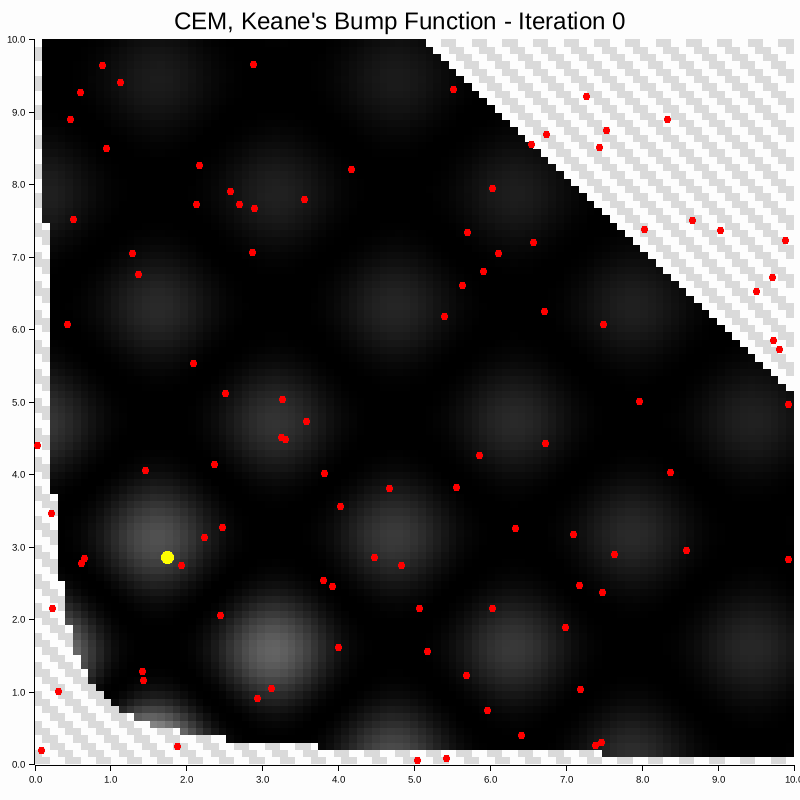

Intelligence is hierarchical
Real intelligence is hierarchical. Low-level control is handled by simple circuits in the central nervous system, called central pattern generators (CPGs). These use physical structure to produce unconscious, rhythmic signals for walking, flying, and swimming, freeing the brain for higher-level control and decision making.
First the mechanics
The default in machine learning is to reach for fancy algorithms. Engineers first look for mechanical, analogue, or physically-informed solutions because they are simpler, more reliable, and cheaper.
Good mechanics compensates for bad software. Software will never compensate for bad mechanics.
Statistical models work better with task-specific priors. Engineering systems are the same. Bake structure into the mechanism and the control loop has less work to do.
No controllers in any of those clips! The mechanics does the work that a controller would otherwise be asked to do.
The locomotion problem
Legs are nonlinear, contact dynamics are discontinuous, and the policy has to handle disturbances in real time. All on power-limited hardware! Three families of solutions dominate the conversation:
- world models - learn the dynamics from rollouts and train a policy by practising inside the learned model
- model predictive control - solve a finite-horizon optimisation problem every control cycle
- central pattern generators - bake rhythm into the circuitry so the dynamics themselves are the gait
World models
World Models ( arXiv 1803.10122 ) learn how the world evolves, while 'practising' inside the learned model instead of reality. A variational autoencoder reconstructs observations and a recurrent net predicts how the latents evolve.
The modern reformulation is the Joint Embedding Predictive Architecture ( JEPA ). No decoder - all predicting happens in latent space. Pixel-level reconstruction wastes compute on detail the model never ends up needing, JEPA lets the encoder discard anything that doesn't help with predictions.
Two encoders share weights, one for the context \(x\) and one for the target \(y\). A predictor maps the context embedding plus a latent action \(z\) to a prediction of the target embedding:
\[ \begin{aligned} s_x &= E_\phi(x) && \text{(context encoder)}, \\ s_y &= E_\phi(y) && \text{(target encoder, weights shared)}, \\ \hat s_y &= P_\theta(s_x, z) && \text{(latent predictor)}. \end{aligned} \]
Training minimises a latent distance, with an anti-collapse regulariser:
\[ \mathcal{L}(\phi, \theta) \;=\; D\!\left(s_y,\, \hat s_y\right) \;+\; \mathcal{R}_{\text{anti-collapse}} \]
JEPA: both encoders share \(\phi\). The predictor lives entirely in latent space, no decoder.
Without \(\mathcal{R}_{\text{anti-collapse}}\), the encoder has a degenerate cheat: map every input to the same constant latent. Then \(s_y = \hat s_y\) trivially, the loss is zero, and nothing's been learned! Standard fixes either regularise the variance of the embedding so it can't shrink to a point or use a momentum-averaged target encoder with a stop-gradient (what I-JEPA uses).
Hierarchical JEPA (H-JEPA) stacks JEPAs at different temporal resolutions. Its top level encodes seconds and predicts abstract intent (e.g., "walk forward"). Bottom level encodes milliseconds and predicts the next motor command. Almost like brain -> central nervous system (CNS): high-level has intention, the lower level fills in the blanks to realise it.
Caveat: what's actually ready to make robots walk is DreamerV3 ( arXiv 2301.04104 ) with a pixel decoder, demonstrated on Boston Dynamics Spot ( arXiv 2206.14176 ). JEPA is the current hot topic, (at least in my circles at time of writing), not yet used out in the field.
Model predictive control
Model predictive control (MPC) plans a short trajectory against a known dynamics model, executes the first step, then replans. The trick is the receding horizon : full-trajectory optimisation is intractable, but an \(H\)-step lookahead is tractable, and re-solving every cycle catches disturbances before they accumulate.
Given the current state \(x\) and dynamics \(f\), MPC finds the control inputs \(u_{0:H-1}\) minimising a running cost \(\ell\) plus a terminal cost \(\ell_f\):
\[ \min_{u_{0:H-1}} \; \sum_{k=0}^{H-1} \ell(x_k, u_k) \,+\, \ell_f(x_H) \quad \text{s.t.} \quad x_{k+1} = f(x_k, u_k), \;\; x_0 = x. \]
Only \(u_0\) is presently applied. The new state is observed and the problem gets re-solved from scratch. The horizon \(H\) is short (a fraction of a second if robot locomotion) but the constant replanning lets the controller stay reactive:
Receding horizon with \(H = 3\). At each step the controller plans \(H\) steps ahead (dashed), executes only the first, then shifts the window and replans from the new state.
There are two main flavours of solver:
Sample-based
Model Predictive Path Integral control ( arXiv 1707.03363 ) draws \(N\) candidate control sequences \(u^n\) from a Gaussian centred on the previous solution, simulates each through \(f\), scores them by trajectory cost \(S^n\), and combines by a Boltzmann weight:
\[ u_k^{\star} \;=\; \sum_{n=1}^{N} w_n\, u_k^n, \qquad w_n = \frac{\exp(-S^n/\lambda)}{\sum_{j} \exp(-S^j/\lambda)}. \]
\(\lambda\) is the temperature: small \(\lambda\) sharpens the weights onto the lowest-cost sample, large \(\lambda\) averages broadly. Parallel and gradient-free, but variance scales with horizon.
The Cross-Entropy Method (CEM) is the other classic sample-based MPC solver. Same idea, different update rule: draw \(N\) samples, keep the top-\(k\) lowest-cost ones, refit the sampling Gaussian to that elite set, repeat. Below, CEM finds a minimum of a continuous, constrained, non-convex landscape, where the elite-set updates pull the sampling distribution toward a local basin over a few iterations:

Gradient-based
Iterative Linear-Quadratic Regulator (iLQR) and Differential Dynamic Programming (DDP) linearises \(f\) (first-order Taylor expansion) around a nominal trajectory \((\bar x_{0:H}, \bar u_{0:H-1})\), (same trick as small angle approx \(\sin\theta \approx \theta\) for a pendulum).
Writing the linearised dynamics as a state space model, \(x_{k+1} \approx A_k x_k + B_k u_k\), with Jacobians \(A_k = \partial f / \partial x\) and \(B_k = \partial f / \partial u\), then expanding the cost to 2nd order with matrices \(Q_k, R_k\), gives a Linear-Quadratic Regulator (LQR) sub-problem. LQR has a closed-form solution: the value function \(V_k(x) = \tfrac{1}{2} x^\top P_k x\) propagates via
\[ P_k \;=\; Q_k + A_k^\top P_{k+1} A_k - A_k^\top P_{k+1} B_k \left(R_k + B_k^\top P_{k+1} B_k\right)^{-1} B_k^\top P_{k+1} A_k, \]
backwards from \(P_H\). Iterates by relinearising on new trajectory and re-solving. \(f\) must be differentiable.
Central pattern generators
Screw the learning, skip the optimisation. Build a circuit whose dynamics are the gait.
In my project, (see below), each unit was a Multi-Quadratic Integrate-and-Fire (MQIF) neuron ( arXiv 1709.06824 ): a three-state ordinary differential equation (ODE) with a fast voltage \(V\), a slow recovery variable \(V_s\), an ultra-slow modulator \(V_{us}\), and a hard reset on \(V\). There are other neuron models, but this one was analytically simpler to design and tune:
\[ \begin{aligned} C\, \dot V \;&=\; I + g_f (V - V_0)^2 - g_s (V_s - V_{s,0})^2 - g_{us} (V_{us} - V_{us,0})^2, \\ \dot V_s \;&=\; (V - V_s) / \tau_s, \\ \dot V_{us} \;&=\; (V - V_{us}) / \tau_{us}, \end{aligned} \]
with reset map
\[ V > V_{th} \;\;\Longrightarrow\;\; V \leftarrow V_{reset}, \quad V_s \leftarrow V_{s,reset}, \quad V_{us} \leftarrow V_{us} + \Delta_{us}. \]
Three timescales:
- fast (\(\tau_V \sim C/250\) ms) - spike kinetics.
- slow (\(\tau_s \sim 2\) ms) - within-burst spike rate.
- ultra-slow (\(\tau_{us} \sim 80\) ms) - burst envelope.
On the timescale of a single spike, \(V_{us}\) barely moves. Can be treated as a fixed parameter so the \((V, V_s)\) subsystem becomes 2D. Its equilibria satisfy \(\dot V = \dot V_s = 0\), so \(V^{\star} = V_s^{\star}\) and
\[ g_f (V^{\star} - V_0)^2 \;=\; g_s (V^{\star} - V_{s,0})^2 + g_{us} (V_{us} - V_{us,0})^2 - I. \]
The right-hand side grows quadratically in \(V_{us}\), so the geometry of \((V, V_s)\) flow flips with \(V_{us}\):
- \(V_{us} \approx V_{us,0}\) - right-hand side is small, the equilibrium is unstable and the 2D flow is a tonic-spiking limit cycle
- \(V_{us}\) far from \(V_{us,0}\) - the right-hand side dominates the depolarising drive, stable equilibrium and the 2D flow rests
At the critical value \(V_{us}^{\star}\), the equilibrium loses stability and a small oscillation appears in its place. That switch is a Hopf bifurcation , (the means by which an ODE flips from resting at a fixed point to orbiting a limit cycle as a state variable crosses a critical value).
\(V_{us}\) slowly traverses \(V_{us}^{\star}\) in both directions, and that's what creates bursts:
Each spike kicks \(V_{us}\) up by \(\Delta_{us}\). After a few spikes \(V_{us}\) crosses \(V_{us}^{\star}\) and the fast subsystem silences. With \(V\) at rest, \(V_{us}\) decays back, crosses \(V_{us}^{\star}\) the other way, and the next burst starts.
The closed three-dimensional loop is a stable limit cycle - a periodic trajectory that nearby states are attracted to. Push the neuron, the dynamics pull it back to the cycle. Two different initial conditions (IC\(_A\), IC\(_B\)) end up on the same orbit:

Half-centre CPG
A half-centre CPG is two coupled MQIF units \(A\) and \(B\) with inhibitory synapses. Each synapse has a gating variable \(s\) that lags pre-synaptic activity with time constant \(\tau_{syn}\) and feeds back as an inhibitory current scaled by conductance \(g_{syn}\):
\[ \tau_{syn}\, \dot s_{AB} \;=\; \sigma(V_A - V_{syn}) - s_{AB}, \qquad I_B \;=\; I_{ext} - g_{syn}\, s_{AB}, \]
and symmetrically for the \(B \to A\) synapse, where \(\sigma\) is the sigmoid function. When \(A\) bursts, \(s_{AB}\) saturates near 1 and the inhibitory current to \(B\) holds it silent. Once \(V_{us}\) of neuron \(A\) surpasses \(V_{us}^{\star}\) and bursting dies, \(s_{AB}\) decays, the inhibition lifts, and \(B\) fires and in turn silences \(A\). The pair alternates with no external clock. That's the half-centre oscillator .
Phase selects gait
Four units connected like above in a directed inhibition graph give a quad-centre CPG, one neuron per leg. The graph's adjacency matrix encodes phase relationships: which legs inhibit which, which pairs synchronise, which alternate. Different inhibition patterns select different gaits ( CPG review ):
Stance windows per leg, time along x. Front-left (FL) and front-right (FR) are warm, back-left (BL) and back-right (BR) cool. Same four units, different inhibition adjacency. Walk : four-beat sequence (one leg at a time). Trot : diagonal pairs sync, FL+BR (orange+pink), then FR+BL (yellow+blue). Bound : front pair (FL+FR) synced, then back pair (BL+BR).
Adaptation
When input current \(I\) is raised and the firing rate increases, gait frequency climbs with it. Swap the inhibition graph and the gait swaps. A handful of hyperparams/inputs replaces an entire policy network! This TED talk on a CPG-driven salamander robot shows how robust the idea is. Swimming is typically a difficult control problem, CPGs handle it naturally:
Three approaches, three costs
Data-heavy. Millions of frames to fit encoder + predictor + policy. Three networks at inference. Latent state opaque, errors compound on long horizons. No inductive bias for periodicity.
Compute-heavy, resolve at every cycle. Real-time only with an accurate \(f\), a short horizon, and warm-starts. Often brittle and model-mismatched.
Structure-heavy. Rhythm lives in an ODE with a few analog parameters. No learning, no online optimisation. Robust by limit-cycle attraction.


1. Motor degrees of freedom
Get the kinematics right before adding actuation. Spider was easy, one motor per joint. Dog was harder, so I built a joints-only prototype first and moved it by hand to check:


The dog leg got two antagonistic joints (later replaced by motors) joined by an elastic band acting as a tendon. Joints rotating together swings the leg, rotating against extends/contracts it. The elastic stores energy the same way muscle does, the leg has passive compliance for free.
2. Mechanical strength
The motors alone could not carry the payload :(
Fixed in 3 ways:
- gear ratios for torque. Each drive motor gears down ~3:1 to multiply torque at the joint.
- support axles on both sides - otherwise cantilevered axles bend, slip, and chew through
- leg tuned for loading and laser-cut narrow where bending moments wre large. Kept gaps elsewhere to save mass/recycle MDF


(White parts 3D-printed, wood laser-cut, metal pre-fabbed)
3. Finished legs


4. The gaits
MQIF units, half-centre and quad-centre coupling, implemented in Simulink. No policy network, no MPC solver, no online optimisation! Change the gait by changing the inhibition graph.


Thanks for reading :)
In my opinion, asking a neural network to learn locomotion entirely from simulation works well, but is a software answer to a mechanical question. In nature, it's resolved by attractor dynamics!
Rhythm doesn't need to be learned.
It's in the wiring ;)